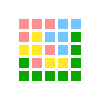

PrimeWordle
Simple game similar to Wordle. Set of unique ascending primes is given, and the goal is to guess them. Yellow tile means the number is in given set, but on another position. Green tile means it has correct position. Red tile means the picked number is too low. blue means the picked number is too high. Check for daily challange!
War gambling
War card game implementation with "gambling". Player starts with 100.00 coins (virtual money). You can bet on croupier, war, or the player. The odds are adjusted to the mathematical chances of winning.